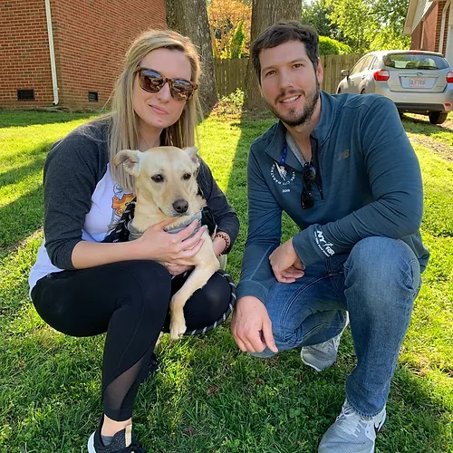
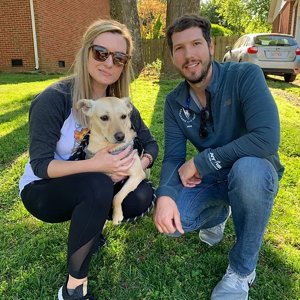
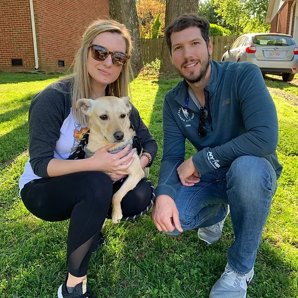

We are a non-profit organization with the goal of rescuing, rehabilitate and find furever loving homes for abandoned, stray and neglected dogs and cats. Here, at Pawsitively Rescued, with our deep commitment to compassion and care, our dedicated team of volunteers and staff work tirelessly to ensure that each animal receives the love, attention and medical treatment they deserve. By promoting adoption and responsible pet ownership, we aim to create lasting bonds between animals and their forever families, ultimately building a brighter future for all of our furry friends. Join us in our journey to make a difference. One paw at a time!
